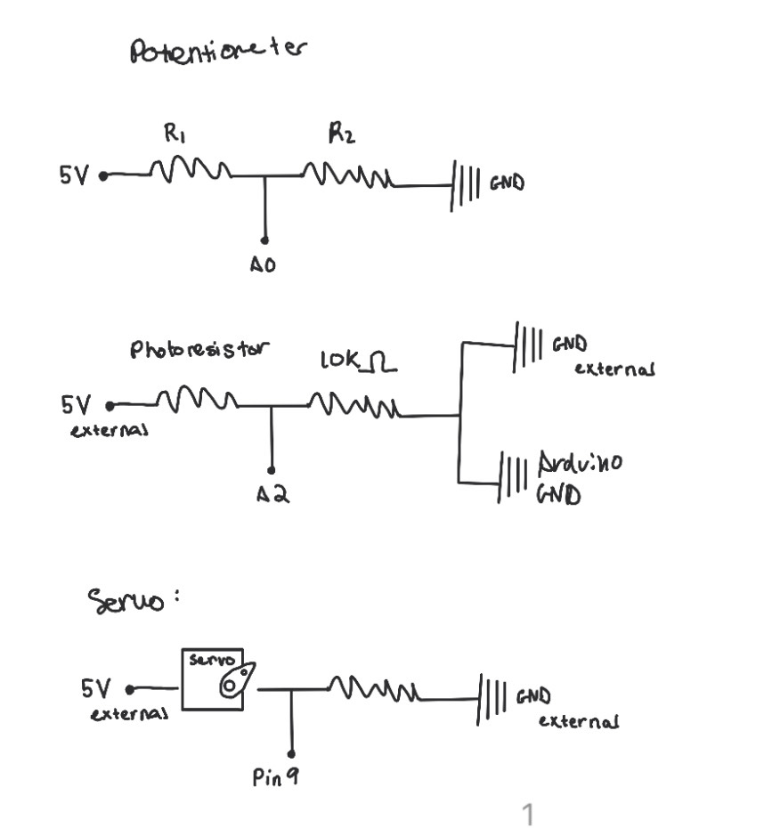
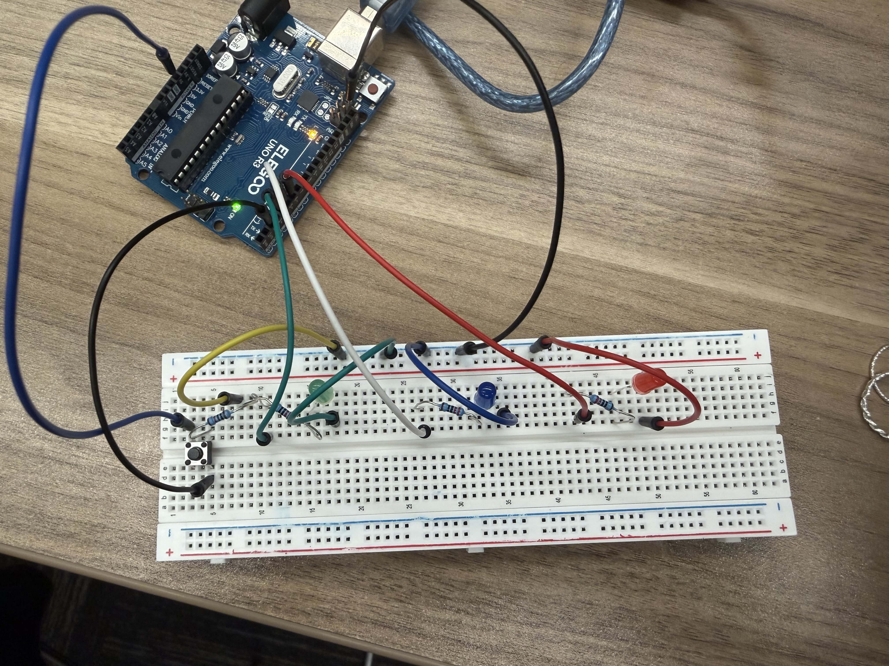
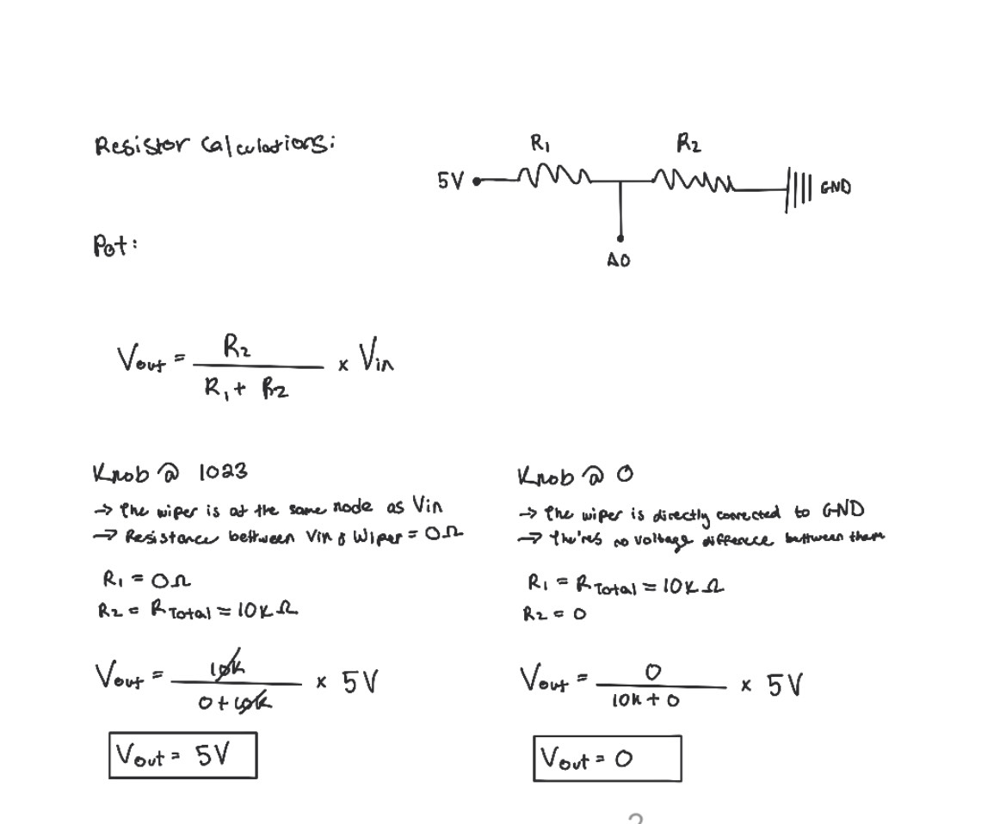
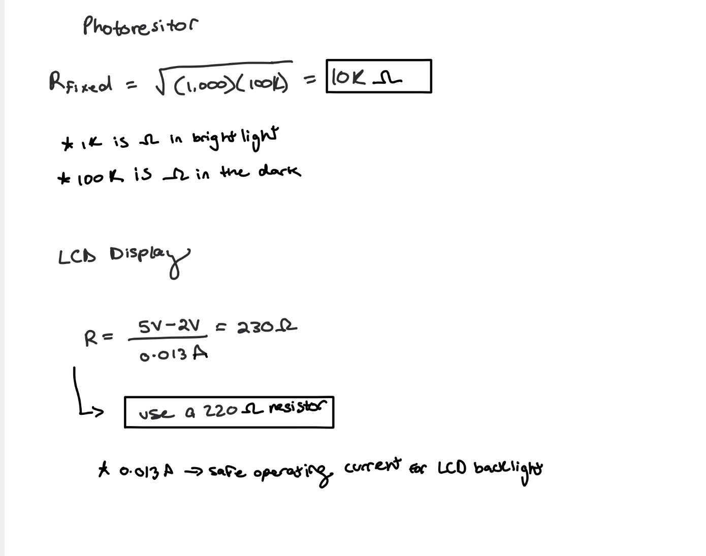
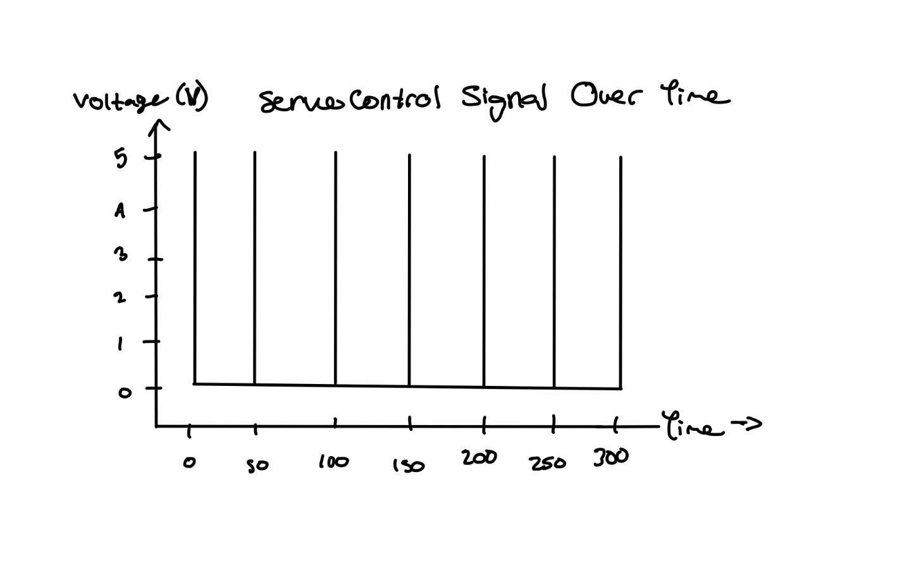

Here is all the documentation for assignment 4!
Here is all the documentation for assignment 4!
Schematic:

I drew the schematics this way to represent XYZ !!!!!!!
Circuit:

ADD HERE
Ohm's Law Calculations


I noted that 1k Ohms is for bright light, and 100k Ohms is for dark, which I used to calculate the resistor needed for my photoresistor.
likewise, I used 0.013 amps as a safe operating current for my LCD.
Firmware:
/*
Valentina Filizola
Libraries! Assignment
HCDE 439
*/
// Include the servo library (library #1). [Included the # to show which libraries I used, but this was not in my code]
#include <#Servo.h>
// Include the LCD library (library #2).
#include <#LiquidCrystal.h>
// Create a Servo object to control the servo motor.
Servo myServo;
// Create an LCD object using RS=12, E=11, D4=5, D5=4, D6=3, D7=2.
LiquidCrystal lcd(12, 11, 5, 4, 3, 2);
// Set the servo signal pin.
const int servoPin = 9;
// Set the potentiometer analog input pin (controls behavior).
const int potPin = A0;
// Set the photoresistor divider analog input pin.
const int photoPin = A2;
// Set minimum servo angle to avoid mechanical stops.
const int minAngle = 5;
// Set maximum servo angle to avoid mechanical stops.
const int maxAngle = 175;
// Track the current servo angle.
int angle = minAngle;
// Track direction of motion (+1 forward, -1 backward).
int stepDir = 1;
// Store calibrated minimum light ADC reading.
int lightMin = 1023;
// Store calibrated maximum light ADC reading.
int lightMax = 0;
// Store calibrated midpoint light value.
int lightCenter = 512;
// Store the last “good” light reading for outlier rejection.
int lastLight = 0;
// Store an exponentially smoothed light value.
float lightEMA = 0.0;
// Set EMA smoothing factor (smaller = smoother).
const float alpha = 0.15;
// Store a simple “mode” for interaction using only the pot.
int mode = 0;
// Calibrate the photoresistor by sampling a short window.
void calibratePhotoresistor() {
// Reset min value before sampling.
lightMin = 1023;
// Reset max value before sampling.
lightMax = 0;
// Save the start time of calibration.
unsigned long startMs = millis();
// Sample for about 2 seconds (wave hand / flashlight for range).
while (millis() - startMs < 2000) {
// Read raw photoresistor ADC value.
int v = analogRead(photoPin);
// Update minimum observed value.
if (v < lightMin) lightMin = v;
// Update maximum observed value.
if (v > lightMax) lightMax = v;
// Small delay to reduce spam and stabilize sampling.
delay(5);
}
// If calibration range is too small, expand it slightly for safety.
if (lightMax - lightMin < 20) {
// Pull min down a bit but not below 0.
lightMin = max(0, lightMin - 10);
// Push max up a bit but not above 1023.
lightMax = min(1023, lightMax + 10);
}
// Compute center as midpoint of min/max.
lightCenter = (lightMin + lightMax) / 2;
// Initialize lastLight to the center to avoid startup spikes.
lastLight = lightCenter;
// Initialize EMA state to the center for stable filtering.
lightEMA = (float)lightCenter;
}
// Setup runs once at boot.
void setup() {
// Start Serial for debugging and documentation.
Serial.begin(9600);
// Attach the servo to its signal pin.
myServo.attach(servoPin);
// Initialize the LCD as 16 columns by 2 rows.
lcd.begin(16, 2);
// Print a startup message on the LCD.
lcd.print("Calibrating...");
// Calibrate the photoresistor (rubric requirement for analogRead usage).
calibratePhotoresistor();
// Clear the LCD after calibration.
lcd.clear();
// Print calibration results to Serial so you can cite them on your webpage.
Serial.print("Calibrated lightMin=");
Serial.print(lightMin);
Serial.print(" lightMax=");
Serial.print(lightMax);
Serial.print(" lightCenter=");
Serial.println(lightCenter);
}
// Loop runs forever.
void loop() {
// Read the potentiometer (used for step size and also mode selection).
int potValue = analogRead(potPin);
// Read the photoresistor raw value.
int rawLight = analogRead(photoPin);
// Reject rare “broken” outliers that jump outside calibrated bounds.
if (rawLight < lightMin - 50 || rawLight > lightMax + 50) {
// Replace suspicious reading with last good reading.
rawLight = lastLight;
}
// Save the last good reading for next time.
lastLight = rawLight;
// Update the exponential moving average to reduce ±10% noise.
lightEMA = alpha * (float)rawLight + (1.0 - alpha) * lightEMA;
// Convert filtered value to integer ADC units.
int lightValue = (int)lightEMA;
// Use pot to choose a “mode” (low pot = mode 0, high pot = mode 1).
mode = (potValue < 512) ? 0 : 1;
// Map pot into a sensitivity span for the light window.
int span = map(potValue, 0, 1023, 80, 700);
// Compute low bound around the calibrated center.
int low = lightCenter - span / 2;
// Compute high bound around the calibrated center.
int high = lightCenter + span / 2;
// Clamp low bound to ADC range.
low = constrain(low, 0, 1023);
// Clamp high bound to ADC range.
high = constrain(high, 0, 1023);
// Clamp filtered light into the working window.
int clamped = constrain(lightValue, low, high);
// Map light to servo speed delay (brighter -> faster here).
int moveDelay = map(clamped, low, high, 120, 3);
// Constrain delay to stable range.
moveDelay = constrain(moveDelay, 3, 120);
// Map pot to step size (movement amount each update).
int stepSize = map(potValue, 0, 1023, 1, 10);
// Constrain step size to safe range.
stepSize = constrain(stepSize, 1, 10);
// If mode 1, only sweep when it is darker than the center (interactive behavior).
if (mode == 1 && lightValue > lightCenter) {
// Hold position by writing the current angle.
myServo.write(angle);
// Show a status message on the LCD.
lcd.setCursor(0, 0);
lcd.print("Mode1: HOLD ");
// Show the light value on the LCD.
lcd.setCursor(0, 1);
lcd.print("L=");
lcd.print(lightValue);
lcd.print(" C=");
lcd.print(lightCenter);
// Short delay to reduce flicker and spam.
delay(50);
// Exit early so we don’t sweep in this condition.
return;
}
// Update angle by direction and step size.
angle += stepDir * stepSize;
// Reverse direction at maximum angle.
if (angle >= maxAngle) {
// Clamp to max angle.
angle = maxAngle;
// Reverse direction.
stepDir = -1;
}
// Reverse direction at minimum angle.
else if (angle <= minAngle) {
// Clamp to min angle.
angle = minAngle;
// Reverse direction.
stepDir = 1;
}
// Send the new angle command to the servo.
myServo.write(angle);
// Print debugging info to Serial for your documentation.
Serial.print("Pot=");
Serial.print(potValue);
Serial.print(" Light(raw)=");
Serial.print(rawLight);
Serial.print(" Light(filt)=");
Serial.print(lightValue);
Serial.print(" Step=");
Serial.print(stepSize);
Serial.print(" Delay=");
Serial.print(moveDelay);
Serial.print(" Mode=");
Serial.println(mode);
// Display key values on the LCD (matches your circuit + code).
lcd.setCursor(0, 0);
lcd.print("A=");
lcd.print(angle);
lcd.print(" D=");
lcd.print(moveDelay);
lcd.print(" ");
// Display light and mode on the second row.
lcd.setCursor(0, 1);
lcd.print("L=");
lcd.print(lightValue);
lcd.print(" M=");
lcd.print(mode);
lcd.print(" ");
// Wait before next movement update.
delay(moveDelay);
}
Circuit's Operation
Additional questions:
1: Say you are using a servo motor you attach to pin 9. In your loop() you have the following code:
void loop() {
for (pos = 0; pos <= 180; pos += 1) {
myservo.write(pos);
delay(100);
}
}
Draw a graph with the x-axis as time and the y-axis as voltage at pin 9 with respect to ground.
